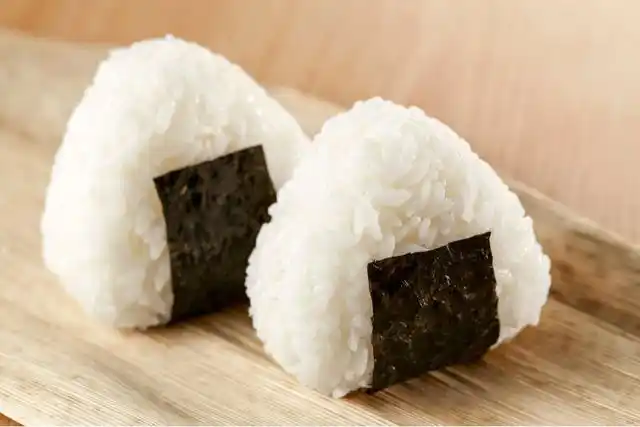

Onigiri

Japanese Rice balls - Onigiri
This is a very common lunch and breakfast food in Japan. Not only is it easy and quick to make, but you can also
fill it up with your favorite toppings!
Ingredients:
- 1 bowl of cooked sushi rice for 1 large or 2 small onigiri
- Salt
- Toppings of your choice (optional)
- Nori (Sea weed) sheet
Steps
- Wet your hands. If the rice is still hot it's best to wet your hands in cold water.
- Place 1 pinch of salt in your palm.
- Take some rice in one hand.
- Place your chosen topping(optional) in the centre. Make sure you use only a small amount, otherwise you
won't be able to give the rice ball a good shape.
- Shape it into a ball with the other hand while pushing the ingredients into the rice, You can add some extra
rice on top to cover all the filling if needed.
- Form a triangle if you like. Pay attention that the corners are well-shaped and the onigiri's shape stays
uniform.
- Cut a small rectangle out of sea weed and place it on the bottom of the rice ball.
Tip:You can wrap the onigiri in some plastic kitchen foil to keep it fresh for longer.
And you are done! Enjoy!
Back to the main page